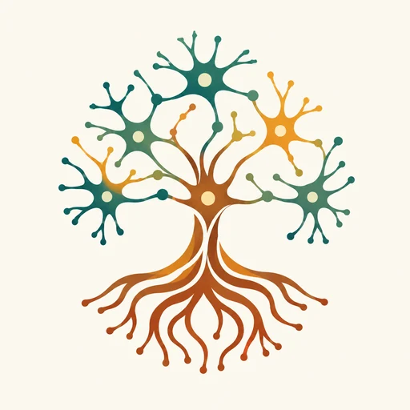

Atención visual
Matrices, rutas, patrones, mosaicos, claves y secuencias para imprimir o usar con acompañamiento.
Descargar PDF
RAÍCESAtención y creación ← Volver a JugarNueva colección semanal · 30 experiencias
Queñal acompaña retos breves que se pueden repetir, pausar o hacer de otra manera. Los primeros 10 ejercicios son libres; los demás forman parte de Familia Plus.
Elegir una actividad
10 libres · 20 Familia Plus
Las pestañas separan cada propósito. El progreso queda solo en este dispositivo.
Matrices, rutas, patrones, mosaicos, claves y secuencias para imprimir o usar con acompañamiento.
Descargar PDFBúsqueda, conteo, correspondencias, copias en puntos y recorridos graduados.
Descargar PDFGuías progresivas RAÍCES para trazar, cambiar de color y crear una versión propia sobre cuadrícula.
Descargar PDFFilosofía RAÍCES
No medimos valor, inteligencia ni capacidad. Miramos qué apoyo ayuda: menos elementos, más tiempo, una explicación con voz, otra forma de responder o una pausa.